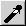

Preview window
The preview window is to select an area that you want to scan. You can resize the preview window and zoom into the scan area.
Pipette white:Use mouse pointer and click a point that shall be white. If you use the left mouse button only the intensity is used to calculate the white point. If RGB default (main window) is not activated you can use the middle mouse button to define the white point for each color component. You can abort the selection by pressing the right mouse button.Pipette gray: Use mouse pointer and click a point that shall be medium gray. If you use the left mouse button only the intensity is used to calculate the white point. If RGB default (main window) is not activated you can use the middle mouse button to define the white point for each color component. You can abort the selection by pressing the right mouse button.  Pipette black: Use mouse pointer and click a point that shall be black. If you use the left mouse button only the intensity is used to calculate the white point. If RGB default (main window) is not activated you can use the middle mouse button to define the white point for each color component. You can abort the selection by pressing the right mouse button. Unzoom: Use full scan area. Zoom out: Increase preview area by 20%. Zoom in: Zoom into selected area. Undo zoom: Undo last zoom. Select visible area: Select the visible area in the preview window for scanning. Acquire Preview: Start preview scan. If you resized the preview window, the new preview is done with updated resolution. Cancel Preview: Cancel a preview scan. Left mouse button: Select scan area: Press (&hold) button do define one edge, move the mouse so that the area you whis to scan is in the frame and release the button. Edit scan area: Move the pointer over an edge of the existing selection and press (&hold) the left mouse button, move the mouse and release the button. Right and middle mouse button: If you press (&hold) the right or the middle mouse button in the selection frame you can move the selection frame without resizing it.